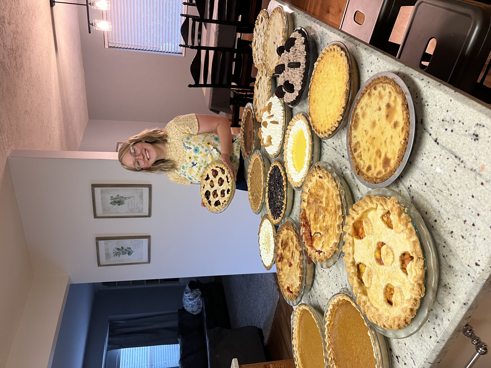

As a self-proclaimed pie connoisseur, I have some tips and tricks to share with you about making the perfect pie. Trust me, I’ve had a lot of practice. My current record for pie making on my own is 22 pies in a 24 hour period. That’s a lot of pie! Just imagine how much pie I made working in a production kitchen over the thanksgiving holiday…
Here are my top tips for making the perfect pie:
- Crust
- Use lard in your crust. Just trust me.
- DON'T refrigerate your dough brefore rolling! Unless you live in a very hot area or are working in a sweltering kitchen, you're just making things harder for yourself.
- Don't limit yourself if you don't have a rolling pin. Any smooth rounded surface will do! A glass from your cupboard is a good alternative.
- Always roll from the center of the dough outwards. Turning the dough between each pass with the rolling pin wil give you a nice even circle.
- For the easiest transfer from tabletop to pan, roll out your crust on a peice of parchment on top of a silpat baking mat. Tranfer to the pie dish by picking up the parchment paper and flipping the crust into the dish.
- Filling
- Fruit pies can be thickened with cornstrach, tapioca, or flour. I reccoment using tapioca or a combination of tapioca and cornstarch.
- Always go low and slow when thickening fillings on the stove.
- The best fillings are made with ingedients that are in season, but frozen fruit can be a good substitute in a pinch.
- Baking
- Trying to blind bake a crust but don't have pie weights? Use rice or dried beans instead.
- watch the edges of your crust for over-browning. Cover loosely with aluminum foil if needed.
- Your fruit fillings are done when they bubble thickly at the edges of the pie.
Just starting? use a disposable pie pan!
Check out this inteactive map to see what the most popular dessert is in your home state!